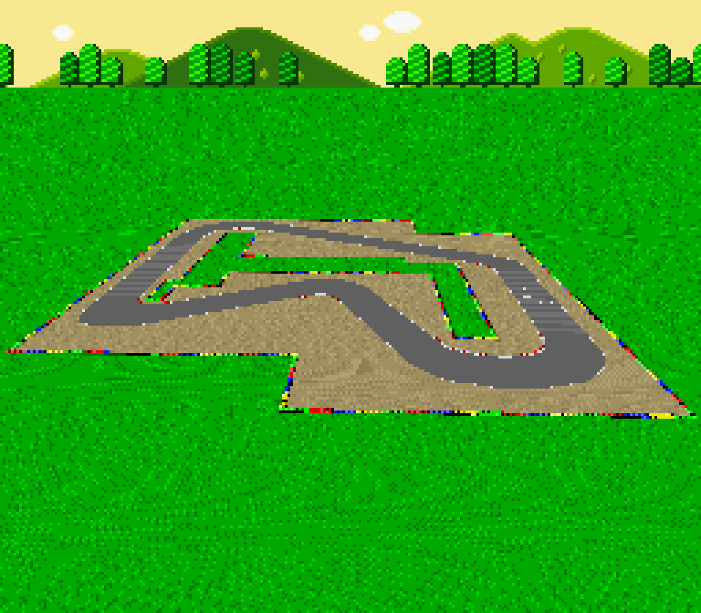

The Super Nintendo Entertainment System had a huge variety of games that used one of its effects known as "Mode 7", which in short allowed the console to apply any number of 2D affine transformations to a background. These transformations could be updated on a per-scanline basis, meaning that some really cool distortion and perspective effects could be done. This program was written to test out a shader I wrote to try and simulate the specific perspective effect used in Super Mario Kart, and thus uses some of its graphics to show its accuracy.
The program was written in C++ using the Allegro 5 library, and using HLSL for the shader. It was written over the course of about a month. I then ported it to GLSL over the course of a day.
